DADA2026:10
Defence against the Dark Arts
Tenth topic - Side channels, and the Future?
Hugh Anderson [Q]
July, 2026
Remember this in school?(I promise to use it later)
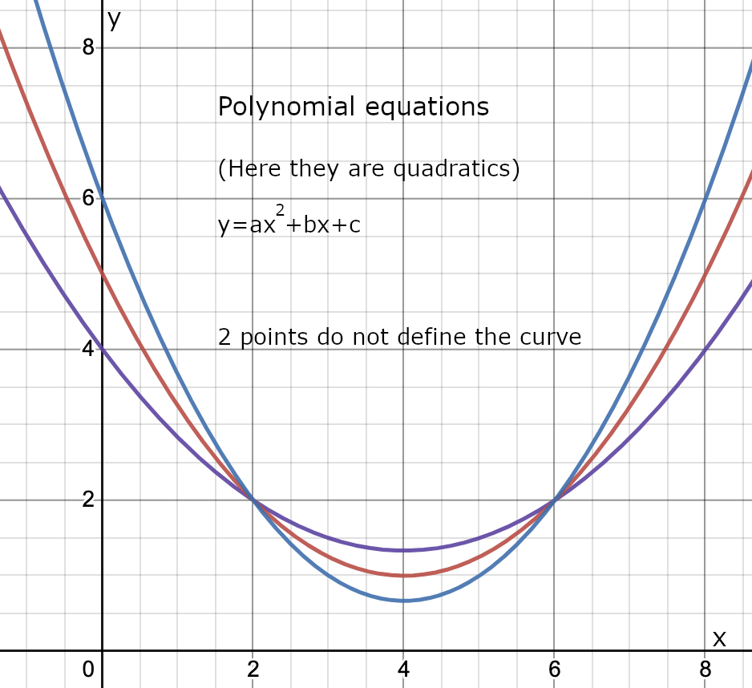
Where are we?
- Introduction (in May):
-
Warfare, ... and Human weaknesses.
- System Complexity:
-
Fight back with design principles, standards and formal methods.
- Crypto 1:
-
Traditional systems - substitution and permutation. (Pre 1976).
- Crypto 2:
-
(Post 1976) Asymmetric systems: OWF, computational complexity, hashes.
- IP Networks:
-
Layered structure designed for resilience, not security. Hardening the Internet.
- OtherNets:
-
Other communication worlds that largely rely on security-by-obscurity.
- Web Apps:
-
Weaknesses and defences for web applications.
- Infrastructure:
-
Banking, PKI, the DNS, IoT, media.
- Machine Architecture:
-
Issues with hardware - timing and race conditions, caching and so on.
- Side Channels:
-
Today we will look at side-channel attacks, where other properties of a computation (speed, radiation, temperature...) can be used to attack systems. We will then finish off the course with a look to some advanced, non-obvious ideas.
Outline
- Side
Channels
- Timing: Exponentiation attack
- Cache timing: attack on Montgomery ladder!
- Fault injections
- Side channel attacks on smartcards
- Non-obvious
applications and attacks
- Secret Sharing (SS)[Administrative controls: SOD]
- Secure multi-party computation (MPC)[Data privacy issues]
- Oblivious transfer (OT) [Non-repudiation]
- Quantum communication and computation[Post...]
- The
end...
- Where did we go?
Side Channels
Outline
- Side
Channels
- Timing: Exponentiation attack
- Cache timing: attack on Montgomery ladder!
- Fault injections
- Side channel attacks on smartcards
- Non-obvious applications and
attacks
- Secret Sharing (SS)[Administrative controls: SOD]
- Secure multi-party computation (MPC)[Data privacy issues]
- Oblivious transfer (OT) [Non-repudiation]
- Quantum communication and computation[Post...]
- The end...
- Where did we go?
Timing attack on exponentiation [ctrl-i1]
The first example of a timing attack on exponentiation (as in RSA) was introduced by Paul Kocher in 1995 (see [ctrl-i1] above), while he was an undergraduate at Stanford. The attack attempts to find the key k, and exploits how efficient exponentiation is carried out.
Note that RSA does repeated multiplication, and ECC/Elgamal use point addition, an analog of exponentiation. The algorithms use doubling and look the same:
| RSA | ECC | |
|
|
Attacker’s capability and goal
Consider the RSA algorithm, and multiplication. For any 2 integers x,y, the adversary can determine the time taken to compute x\times y\bmod N. The adversary can send any c to the decryption oracle and measure the time taken by the oracle. That is, the time taken to compute c^{d}\bmod N
First, note that for different values of the bits in the key, the loop takes different times. It takes longer if the bit is a 1.
The attacker sends large numbers of randomly drawn ciphertexts to the oracle, and measures the time taken for each computation. The attacker simulates the behaviour of the oracle for b_{0}=0,b_{0}=1 and tries to find timing correlations with the actual measured time. Once it has a best guess for b_{0} it moves on to b_{1} and so on through the bits, an iterative process.
The attack
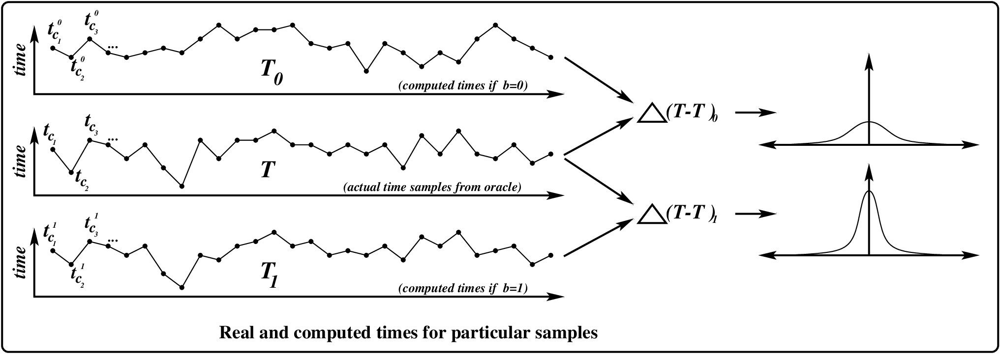
The attacker knows b_{0},\ldots b_{4}, and is trying to discover b_{5} by repeatedly querying the oracle with a new c, and getting the time t. The adversary then
- Determines t_{0\ldots4}, with knowledge of the algorithm, and b_{0},\ldots b_{4}.
- Determines t_{5}^{0}, the time if the bit in the key was 0.
- Determines t_{5}^{1}, the time if the bit in the key was 1.
Now either t=t_{0...4}+t_{5}^{0}+x or t=t_{0...4}+t_{5}^{1}+x (along with noise). The attacker builds two distributions T_{0} and T_{1}. If the oracle’s actual-time distribution T correlates better with T_{0}, then b_{5}=0, otherwise b_{5}=1.
The algorithm continues until all bits of the key are retrieved.
What do we do about this attack?
Both functions return the same result as before, but now they run in a constant time. Note that RSA still does multiplication, and Elgamal still uses point addition, and the algorithms still use doubling and look the same:
| RSA | ECC | |
|
|
.
Outline
- Side
Channels
- Timing: Exponentiation attack
- Cache timing: attack on Montgomery ladder!
- Fault injections
- Side channel attacks on smartcards
- Non-obvious applications and
attacks
- Secret Sharing (SS)[Administrative controls: SOD]
- Secure multi-party computation (MPC)[Data privacy issues]
- Oblivious transfer (OT) [Non-repudiation]
- Quantum communication and computation[Post...]
- The end...
- Where did we go?
Attack involves ECC, memory caches, timing... [ctrl-i2]
OpenSSL is used in about 60% of all web based ssl (https) servers. As a result of this we are very interested in bugs in openssl. It may be the software most closely examined for security errors - all 700,000 lines of code!
From the paper at [i2] above:
“Our attack recovers the scalar k and thus the secret key of the signer and would therefore allow unlimited forgeries.”
The attack is a side channel attack. An attacker can determine if code has been cached or not. If it has been used, then it will be cached.
OpenSSL is built with security in mind, so (of course) it uses the Montgomery ladder, that runs in constant time. Weirdly, the attack is a timing attack (on the cache for the Montgomery ladder code).
Attack is directed at the instruction cache...
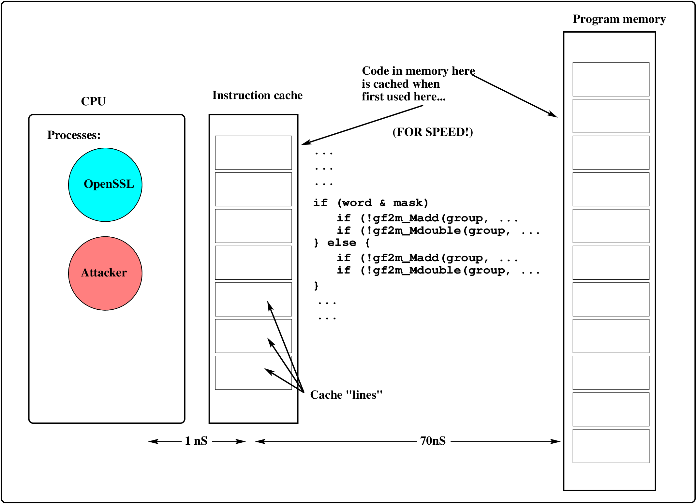
Each time we fetch a new instruction, the cache is filled. The next time we access that instruction, it happens quickly, UNLESS someone clears the cache.
If bit is a “1”, THIS is cached...
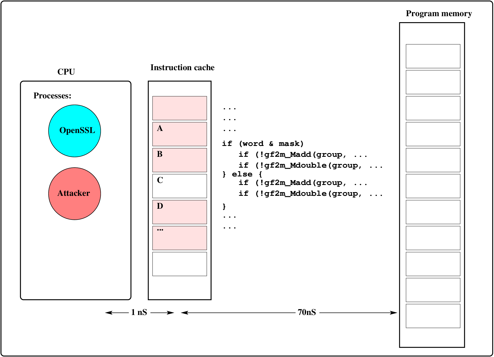
The attacker can determine this by seeing how fast the four cachelines A,B,C,D are loaded, by trying to load one of them, and timing the attempt.
If bit is a “0”, THIS is cached...
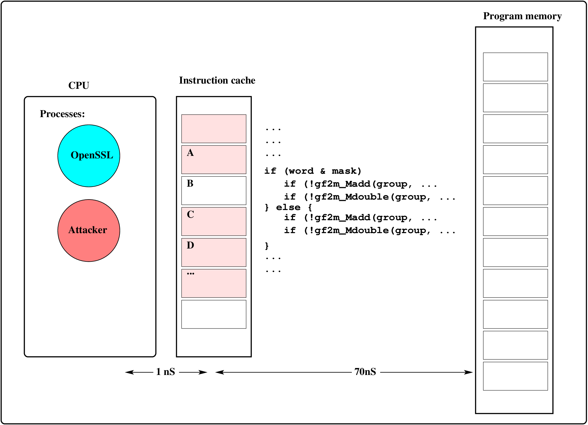
If the bit is a 0, then the attacker determine this once again by seeing how fast the cachelines load. Afterwards, the attacker clears the cache.
OpenSSL timing
if (word & mask) {
if (!gf2m_Madd(..., x1, ... ) goto err;
if (!gf2m_Mdouble(..., x2, ... ) goto err;
} else {
if (!gf2m_Madd(..., x2, ... ) goto err;
if (!gf2m_Mdouble(..., x1, ... ) goto err;
}Each bit of a key is being tested, and depending on the bit we take two different paths. The paths operate on different memory locations which are cached, and an attacker can discover that, because the memory location loads faster. An attacker can determine each bit.
BN_consttime_swap(word & mask, x1, x2,...
if (!gf2m_Madd(..., x1, ... ) goto err;
if (!gf2m_Mdouble(..., x2, ... ) goto err;
BN_consttime_swap(word & mask, x1, x2,...A constant time swap to put variables in the same memory locations.
Outline
- Side
Channels
- Timing: Exponentiation attack
- Cache timing: attack on Montgomery ladder!
- Fault injections
- Side channel attacks on smartcards
- Non-obvious applications and
attacks
- Secret Sharing (SS)[Administrative controls: SOD]
- Secure multi-party computation (MPC)[Data privacy issues]
- Oblivious transfer (OT) [Non-repudiation]
- Quantum communication and computation[Post...]
- The end...
- Where did we go?
Fault injection [ctrl-i3]
This idea was first discussed in D Boneh, RA DeMillo, RJ Lipton, “On the importance of checking cryptographic protocols for faults”, CRYPTO, 1997, with an update at [ctrl-i3] above.
The adversary observes the behavior of a device when some components are faulty. From the behavior, the adversary infers a secret.
The fault could be injected by the adversary. Very often, although the adversary can inject a fault, the adversary cannot predict the outcome. For example, the adversary can flip some bits in a particular register but does not know which bits will be flipped and be unable to read the register.
Rather than c^{d}\bmod N, instead compute e_{1}=c^{d}\bmod p, and e_{2}=c^{d}\bmod q, and then
{c^{d}\bmod N=(ae_{1}+be_{2})\bmod N}
where a=1\bmod p,a=0\bmod q,b=0\bmod p,b=1\bmod q (pre-computed). This is possible because the factorization of N could be kept around.
Fault injection
Assume the attacker can obtain the output m=(ae_{1}+be_{2})\bmod N.
The attacker can introduce noise/errors during the computation of e_{1}, and no error during the computation of e_{2}. Hence the attacker obtains
{m'=(ae'_{1}+be_{2})\bmod N}
Now, the attacker computes \mathrm{gcd}(m\begingroup\def\b@ld{bold} \text{\ifx\math@version\b@ld\bfseries\textendash}\endgroup\else\textendash\fi m',N). The gcd is either p or q.
Note that m-m'=a(e_{1}-e'_{1})\bmod N, and that a=0\bmod q (but is not zero). If m\begingroup\def\b@ld{bold} \text{\ifx\math@version\b@ld\bfseries\textendash}\endgroup\else\textendash\fi m' is not divisible by p, then
{\mathrm{gcd}(m-m',N)=q}
Outline
- Side
Channels
- Timing: Exponentiation attack
- Cache timing: attack on Montgomery ladder!
- Fault injections
- Side channel attacks on smartcards
- Non-obvious applications and
attacks
- Secret Sharing (SS)[Administrative controls: SOD]
- Secure multi-party computation (MPC)[Data privacy issues]
- Oblivious transfer (OT) [Non-repudiation]
- Quantum communication and computation[Post...]
- The end...
- Where did we go?
Class 1 attacker (the outsider) hack
The outsider does not have electron microscopes or FIB units, or even Nitric acid! Life is tough sometimes. The outsider notices that when power is first applied, the smart card outputs an identification string on the serial OUT line:
Vsn 0.97The outsider knows that the software is very small, and probably stores strings like “Vsn 0.97” in 9 bytes of memory, the 8 bytes of the string, terminated by a null (a byte with all zeroes in its bits). The outsider surmises that the code is probably like this:
void printit( char buf[] ) {
int i=0;
while ( buf[i]!=0 ) {
serialtx(buf[i] );
i=i+1;
}
}
...
printit( ``Vsn 0.97'' );Smartcard constant time loop
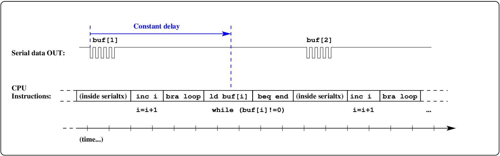
The instructions executed are predictable. After transmitting the character
for
buf[1]:
- The
ivariable is incremented (inc i) - The CPU branches to the
beginning of the while loop (
bra loop) - The value in
buf[i]ld buf[i]) - If it is equal to 0, then
branch to the end of the loop (
beq end) - Otherwise transmit the next character...
There is a constant delay between the character and these instructions.
Class 1 attacker hack 1: glitch it!
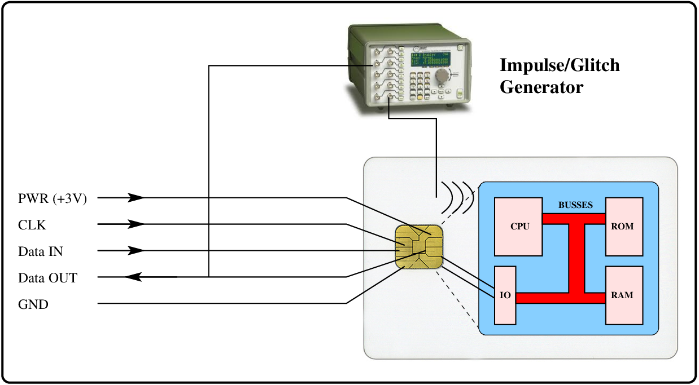
By timing a pulse/glitch to occur
exactly when the software checks the
test at the beginning of the while loop, (it is always a fixed time
after the previous character), attacker can make the test always succeed. i.e. buf[i]!=0 will always be TRUE.
A glitch may be a spark, a variation of the power supply, or some other activity. Hardware to do this is cheaply available (e.g. in most EE labs).
Class 1 attacker hack 1: glitch
If buf[i]!=0 is always TRUE... The code acts like this:
void printit( char buf[] ) {
int i=0;
while ( TRUE ) {
serialtx(buf[i] );
i=i+1;
}
}
...As a result, the serial data line continues
to output serial data corresponding to the entire memory of the processor (program and
data). Note that in small systems like this, memory is not protected, and
buf[0]...buf[65536]
is ALL of memory.
Class 1 attacker hack 2: timing attack on smartcard
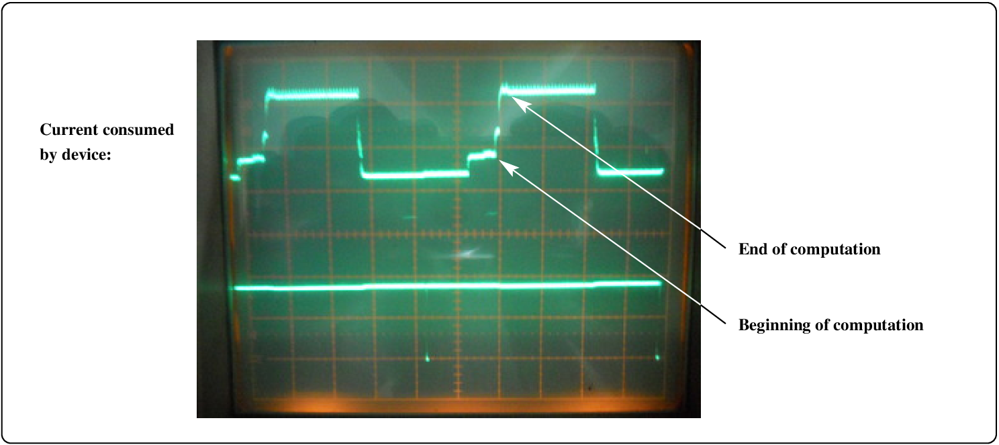
The current trace gives evidence about the computation - type and timing.
An accurate measure of the time of computation leads to an attack.
Thfollowing slide has an example of a timing attack.
Timing attack...
The case of a function to test an 8-digit PIN number:
void testPIN( char buf[] ) {
int i=0;
while ( i<9 ) {
if ( buf[i]!=password[i] ) {
return NOMATCH;
}
i=i+1;
}
return MATCH;
}Instead of requiring 10^{8}=100,000,000 attempts at the password, our attack algorithm only required 80. The attack involved precise measurement of the time for the function while trying out PINs.
Side channel attacks
These attacks are very real, and here we have only looked at a few of the known attacks. In general side-channel attacks are implementation or system dependant, not related to the hardness of the (crypto/security) problem. Caches, timing, power consumption, sound, light, radio waves, faults and so on - all have been used.
In any case they have been shown to achieve success with vastly smaller number of trials/attacks, than would be expected through (for example) root finding, discrete logs or factorization.
Though the underlying mathematical structures seem good, to implement security systems we must think out of the box, like the attackers, and handle unexpected side channel attacks.
Non-obvious applications and attacks
Outline
- Side Channels
- Timing: Exponentiation attack
- Cache timing: attack on Montgomery ladder!
- Fault injections
- Side channel attacks on smartcards
- Non-obvious
applications and attacks
- Secret Sharing (SS)[Administrative controls: SOD]
- Secure multi-party computation (MPC)[Data privacy issues]
- Oblivious transfer (OT) [Non-repudiation]
- Quantum communication and computation[Post...]
- The end...
- Where did we go?
Musings on information security goals and crypto...
... constructed from distributed, chaotically networked, randomly configured, randomly updated, software and machines. This is all a bit of a worry.1
We have Crypto! AES, RSA, Diffie Hellman, ECC, keeping things C, I, and maybe A, whenever we use apps. Hopefully it all works. Hopefully...
For C, we rely on easy and hard functions which we assume to exist.(Caution [1])
For I, we trust in authorities. How many authorities? Well... consider https.(Caution [2])
Three (crypto) ideas...
We will look at modern distributed systems with no authorities, and with quite different goals/application areas.
Here are three non-trivial schemes. Each addresses a particular requirement, beyond basic CIA ones. Existing CIA techniques may be used as building blocks in these schemes. A consistent theme is that these schemes are designed to work without having to trust an authority.
I will present each of the three schemes in the following way:
- The underlying motivation for the particular scheme; what and why.
- The underlying ideas: the scaffolding, activities, procedures; how.
- Summary and implementations.
Some slides may be skipped over...
Motivating (bad) example for sharing a secret
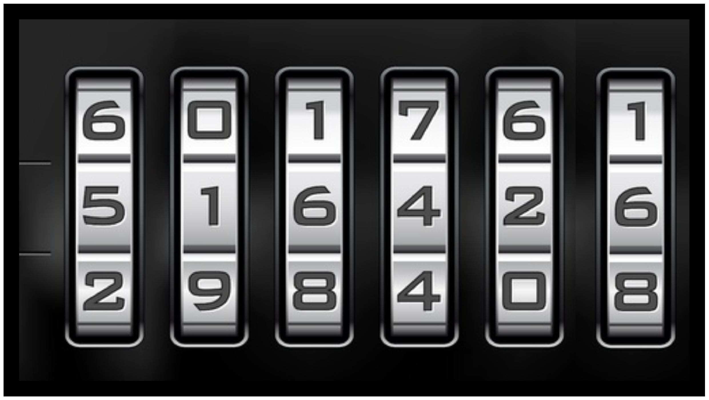
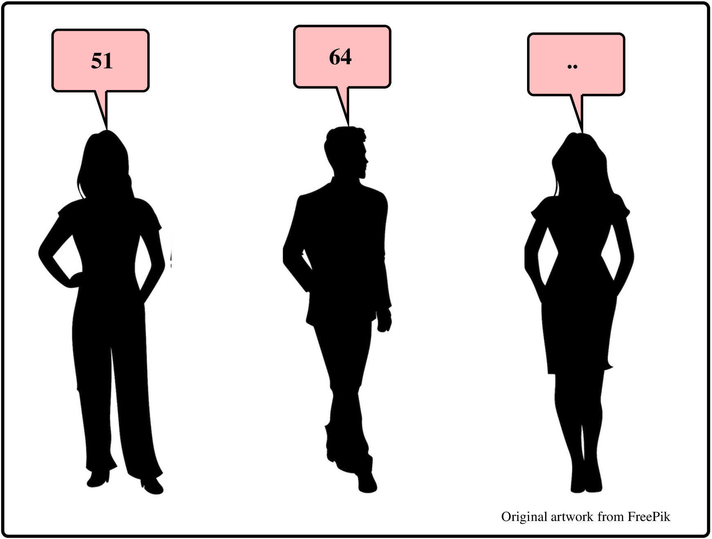
A bank has a safe that can be opened using a secret pin k. The secret k is to be kept by 3 managers. When three of them get together the safe can be opened. How can secret k be shared?
Here is a simple method. Suppose k is a 6 decimal digits sequence. The dealer splits it into 3 equal parts, i.e k=s_{1}\mathbin{\mathmakebox[\widthof{${+}\m@th$}]{+\hskip-1emplus1fil+}}s_{2}\mathbin{\mathmakebox[\widthof{${+}\m@th$}]{+\hskip-1emplus1fil+}}s_{3}. \mathrm{Manager}_{i} will get the “share” s_{i}. Hence, each manager will keep 2 digits.
Question: Suppose \mathrm{Manager}_{1} and \mathrm{Manager}_{2} are malicious. They combine their shares and try to open the safe. How many combinations do they have to try in the worst case?
Activities of a secret sharing scheme
A dealer has a secret to share among some set of w participants {\cal P}=\left\{ P_{1},\ldots,P_{w}\right\} by giving each a share. Any t participants should be able to pool their shares and reconstruct the secret.
- \mathrm{Init}(n,w):
-
The dealer chooses and initializes the SS scheme. n is the security parameter, w is the number of participants.
- \mathrm{Share}(k,t,{\cal P}):
-
Input is secret k, and t: the number of participants to reconstruct the secret. The output is {\cal S}, the shares for each participant in {\cal P}:
{{\cal S}\leftarrow\mathrm{Share}(k,t,{\cal P})}
- \mathrm{Reconstruct}({\cal S}):
-
Returns key k (from at least t shares):
{k\leftarrow\mathrm{Reconstruct}(S)}
The principal property of a scheme like this is that you would want to show that collusion is not possible. This can be done mathematically, which we will not go into here :) Whew!
A better way to split/share the secret...
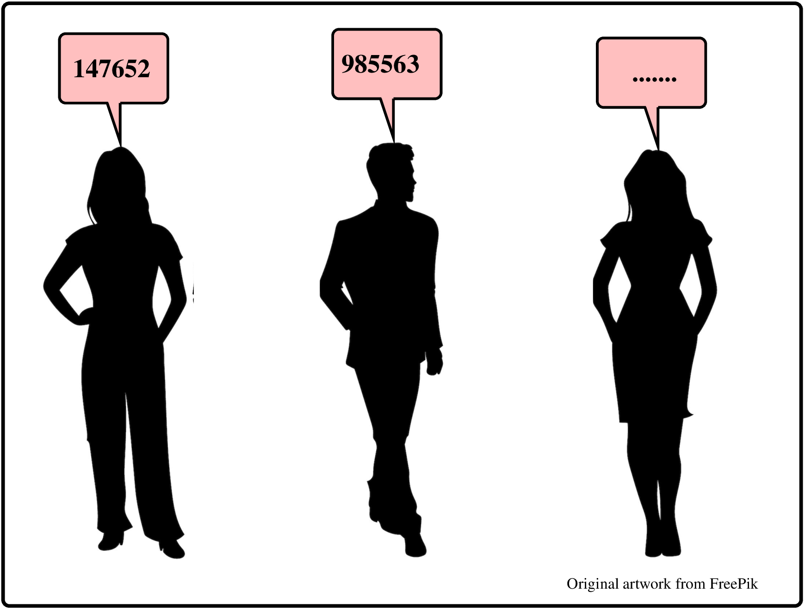
We will use the definition of the SS scheme to show this construction.
- \mathrm{Init}(10^{6},3):
-
We specify 10^{6} keys, and 3 participants in total.
- \mathrm{Share}(k,3,{\cal P}):
-
Randomly pick keys s_{1},s_{2}, from \mathbb{Z}_{10^{6}}, and compute s_{3}=(k-s_{1}-s_{2})\bmod10^{6}. Send shares s_{i} to the managers:
{P_{1},P_{2},P_{3}\leftarrow s_{1},s_{2},s_{3}}
- \mathrm{Reconstruct}(S):
-
Returns the key k:
{k=(s_{1}+s_{2}+s_{3})\bmod10^{6}}
Question: If P_{1} and P_{2} colluded using s_{1},s_{2}, what are the number of possible k values?
This construction is (provably) unconditionally collusion resistant.
Threshold secret sharing[for resilience]
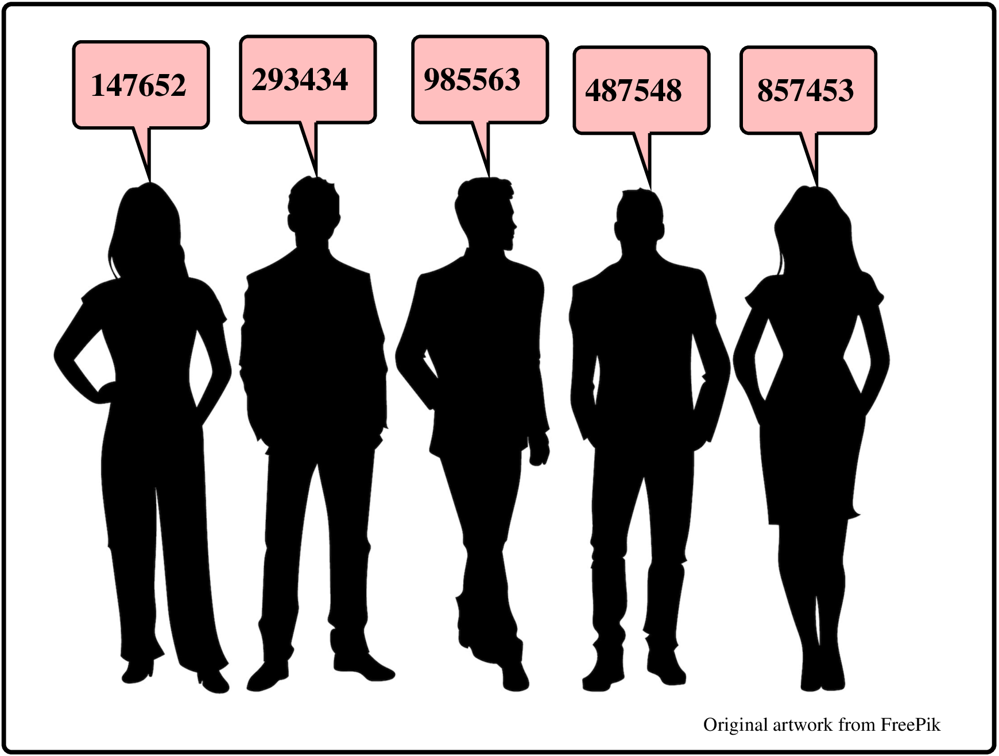
Consider this requirement: any 3 of 5 managers can open a safe, but a single manager cannot. Schemes with such a requirement are threshold schemes (if t=w it is just a sharing scheme).
Here is an example of such a situation in the real-world: perhaps some number of board members of a company can keep shares of the key to the company’s secret IP. Of the board members, any 4 (say) can divulge the secret, but it takes 4 (not 3, not 2 )...
A (t,w)\mhyphen\mathrm{threshold} scheme is an SS scheme with t<w.
With this scheme, t participants can compute k, but no group of t-1 participants can do so.
Shamir’s (t,w)-threshold scheme(I told you...)
The main idea is based on having sufficient points to fully define a polynomial curve. Once we have defined the curve we can find where it crosses the Y axis (that is our secret key f(0)=k ). In our case we use a polynomial of degree 2 (a quadratic), and need 3 points on the curve to fully define it.
As a result, any 3 of the participants can find out the key.
Summary [i6]
Secret sharing distributes responsibility for something amongst people (or in our case computers, systems, modules). An example of separation of duty.
We saw that digital secret sharing has a particular shape or signature: \mathrm{Init}(n,w), \mathrm{Share}(k,t,{\cal P}), and \mathrm{Reconstruct}(S), and that we could come up with different SS schemes, all within the same signature.
We saw two ways of doing secret sharing (a bad way and a good way), and we looked at Rabin’s t-w scheme based on polynomials.
There are many open source, and commercial implementations of SS. For example, see [i6] above.
Outline
- Side Channels
- Timing: Exponentiation attack
- Cache timing: attack on Montgomery ladder!
- Fault injections
- Side channel attacks on smartcards
- Non-obvious
applications and attacks
- Secret Sharing (SS)[Administrative controls: SOD]
- Secure multi-party computation (MPC)[Data privacy issues]
- Oblivious transfer (OT) [Non-repudiation]
- Quantum communication and computation[Post...]
- The end...
- Where did we go?
Motivating example for MPC [1]

Imagine that Ebay, Amazon, AliExpress... all wanted to build a (ML) model, to recommend next purchases, based on buying patterns gleaned from all of their internal data. This would be useful to all of them, but none of them would want to reveal their internal data. All of them want the model, as it will be more accurate if it is learnt from all their data. The solution? MPC.
Activities of an MPC scheme for any computable {\cal F}()
Participants have secrets k_{i}, which they do not wish to reveal. However, they do wish to compute a composite function {\cal F}(k_{1},k_{2},\ldots,k_{w}). Participants distribute shares of the secrets, evaluate the shares of the function {\cal F}(), and then reconstruct the value from the resulting shares.
- \mathrm{Init}(n,{\cal P}):
-
For initialization, n is the security parameter, {\cal P} is the set of participants.
- \mathrm{Share}({\cal K}):
-
The inputs are the secrets {\cal K}. The output is {\cal S}, the shares:
{{\cal S}\leftarrow\mathrm{Share}({\cal K})}
- \mathrm{Eval}({\cal S}):
-
Input is {\cal S}. Outputs are the function shares {\cal F}_{s}=\left\langle f_{s_{i}},\ldots,f_{s_{w}}\right\rangle:
{{\cal F}_{s}\leftarrow\mathrm{Eval}({\cal S})}
- \mathrm{Reconstruct}({\cal F}_{s}):
-
Returns the final function value.
{f\leftarrow\mathrm{Reconstruct}({\cal F}_{s})}
Note that \mathrm{Share} and \mathrm{Reconstruct} are the same ideas seen in the secret sharing scheme. A theorem shows that for any (computable) {\cal F}(), there is a protocol for MPC, based on secret sharing.
Can we compute a single bit without revealing?
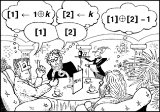
A group of three cryptographers are dining at a restaurant. When they ask for the bill, the waiter tells them that the meal has been paid for, by someone who wants to remain anonymous. The only other table has someone from the NSA, so the cryptographers want to find out if the NSA guy paid, or one of their own group (without revealing if they themselves paid).
Question: Can they find out if one of their own group paid for the meal?
A no-reveal protocol for computing one bit
Each pair of adjacent cryptographers privately decide on a randomly chosen bit (0/1). Maybe behind the menu? Each cryptographer knows their own “I paid” status (just 1 bit). If they did not pay for the meal, they announce the XOR of their two neighbours. Otherwise they announce the reverse.
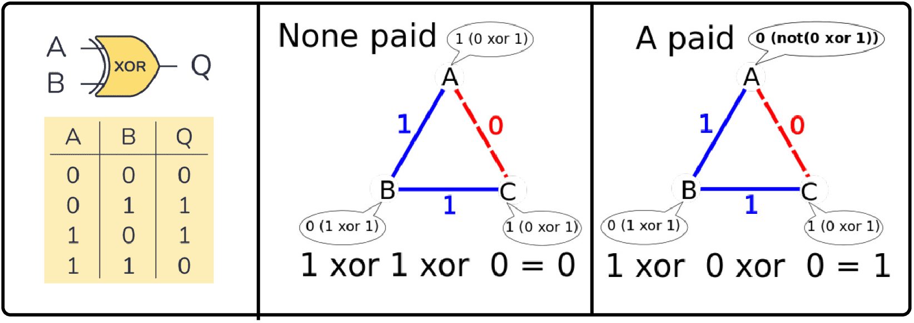
The parity of the values is 1 if (any) one of them paid for the meal.
Dining cryptographers is an MPC!
Assume that the cryptographers (Alice, Bob and Charles) each have their private secrets \left\langle k_{a},k_{b},k_{c}\right\rangle, each being a value (0/1) indicating if they paid for the meal. There are two cases - either all are 0, or one is 1. We want to compute the function f={\cal F}(k_{a},k_{b},k_{c})\mathrel{\overset{\textsf{def}}{=}}k_{a}\oplus k_{b}\oplus k_{c}, which will indicate if one of the cryptographers paid for the meal. The flow is as follows:
\begin{array}{lcrll} \mathinner{\color{black}\left\langle \mathrm{fn},\right.} & {\color{black}\mathrm{input}}\mathpunct{\color{black},} & \mathinner{\color{black}\left.\mathrm{output}\right\rangle }\\ \left\langle {\cal F},\right. & \left\langle k_{a},k_{b},k_{c}\right\rangle , & \left.\ldots\right\rangle \\ \mathrm{} & & & \longleftarrow & \mathrm{Share()}\\ \left\langle {\cal F},\right. & \left\langle \begin{array}{l} \left\langle k_{a},s_{ac},s_{ab}\right\rangle ,\\ \left\langle k_{b},s_{ab},s_{bc}\right\rangle ,\\ \left\langle k_{c},s_{bc},s_{ac}\right\rangle \end{array}\right\rangle , & \left.\ldots\right\rangle \\ & & & \longleftarrow & \mathrm{Eval()}\\ \left\langle {\cal F},\right. & \ldots, & \left.\left\langle \begin{array}{l} a\leftarrow k_{a}\oplus s_{ac}\oplus s_{ab},\\ b\leftarrow k_{b}\oplus s_{ab}\oplus s_{bc},\\ c\leftarrow k_{c}\oplus s_{bc}\oplus s_{ac} \end{array}\right\rangle \right\rangle \\ \mathrm{} & & & \longleftarrow & \mathrm{Reconstruct()}\\ \left\langle \ldots,\right. & \ldots, & \left.f\leftarrow a\oplus b\oplus c\right\rangle \end{array}
The final value computed is the desired value:
\begin{array}{lclcl} f & = & a\oplus b\oplus c\\ & = & k_{a}\oplus s_{ac}\oplus s_{ab}\oplus k_{b}\oplus s_{ab}\oplus s_{bc}\oplus k_{c}\oplus s_{bc}\oplus s_{ac}\\ & = & k_{a}\oplus k_{b}\oplus k_{c} & = & {\cal F}(k_{a},k_{b},k_{c}) \end{array}
Brilliant idea: Computers are made from “circuits” [ctrl-i7]
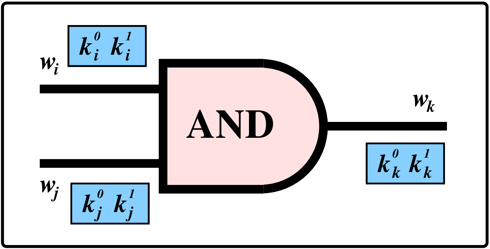
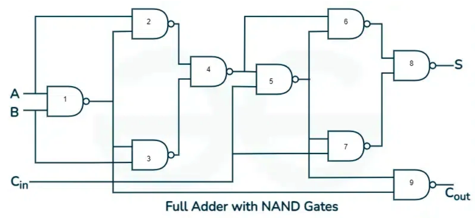
Andrew Yao (MIT, Stanford, Berkeley, Tsinghua University, Turing award) came up with a wonderful idea. He pointed out that computable functions can be worked out on computers (duh!), and that computers can be constructed out of (just) two types of gates. So for any function it is possible to construct a circuit using these two gates to calculate that function.
The second part of his wonderful idea was to invent a way of encrypting these simple computations using a labelling of the wires that interconnect the gates of the circuit. Participants can evaluate the output without knowing values of inputs, by decrypting the garbled circuit. Yao’s garbled circuits are commonly used now for MPCs.
Summary [ctrl-i8]
MPC allows us to effectively use (distributed) data, while addressing privacy and data-sharing concerns, in both the commercial and private world.
We saw that MPC also has a particular shape or signature: \mathrm{Init}(n,{\cal P}), \mathrm{Share}({\cal K}), \mathrm{Eval}({\cal S}), and \mathrm{Reconstruct}({\cal F}_{s}), and that different MPC schemes could all use the same signature.
We saw a one-bit MPC technique, and gave a shout-out to Yao’s garbled circuits.
There are many open source, and commercial implementations of MPC. You could start by looking at reviews such as the one at [i8] above, and then perhaps open-source and sometimes experimental frameworks:
Outline
- Side Channels
- Timing: Exponentiation attack
- Cache timing: attack on Montgomery ladder!
- Fault injections
- Side channel attacks on smartcards
- Non-obvious
applications and attacks
- Secret Sharing (SS)[Administrative controls: SOD]
- Secure multi-party computation (MPC)[Data privacy issues]
- Oblivious transfer (OT) [Non-repudiation]
- Quantum communication and computation[Post...]
- The end...
- Where did we go?
Motivating OT examples (online gambling, contract signing)

In large transactions, we often rely on lawyers, or documents, and we sign along with the other parties. In these scenarios, we are trusting an authority. Can we have contracts that do not rely on trusted authorities? Yes - with oblivious transfer (OT).
The lawyer-less technique of signing the contract, and then sending it off to the other party is not advantageous to you. You have agreed, they have not. There may even be an advantage to the other party; the seller knows you have agreed to buy the house - maybe they can get a better price?
Contract signing systems often turn this indeterminate period on its head, with no advantage to either party to delay anything.
A mechanism for oblivious transfer
| 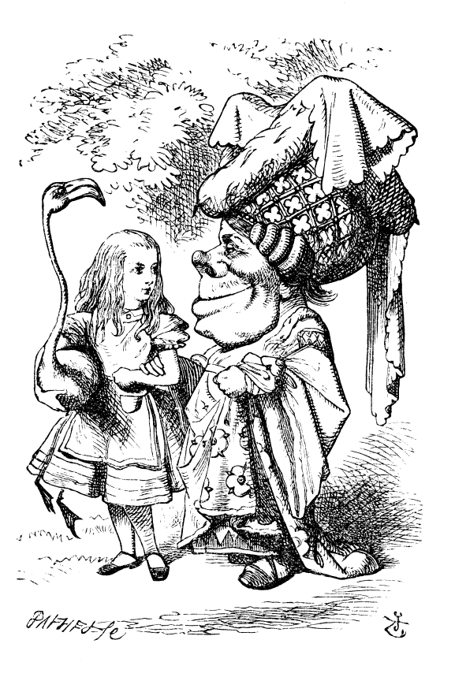 |
A mechanism for oblivious transfer
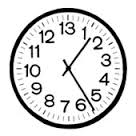
Let us agree that factorizing a large number N=p\times q can be made as hard as we like (p and q are large primes): see https://en.wikipedia.org/wiki/RSA_Factoring_Challenge.
[1]
.
Let us also agree if Alice computes N=p\times q using two large, random primes, she knows that if she sends N to Bob, he will be unable to factor it.
Finally - lets remember that square integers have two square roots. For example \sqrt{16}=\pm4. Also - in the modulo/clock arithmetic world... modulo a prime, numbers also have two square roots!
For example (modulo 13): 4\times4=3~(\bmod13), and 9\times9=3~(\bmod13).
It may not surprise you to learn that, again in modulo/clock arithmetic world but now modulo N, that square numbers have four square roots - two pairs!
For example (modulo 35). The square roots of 16 are 4,11,24 and 31.
If Bob can factorize a number, he wins a coin toss!
- Alice gets two primes p,q, calculates N=p\times q, and sends N to Bob:
N=5\times7=35
- Bob selects random x, and sends y=x^{2}~(\bmod N) to Alice:
y=31^{2}~(\bmod35)=16
- Alice calculates the four square roots of 16, and sends one of these back to Bob.
\hspace{0.2in}\begin{array}{ccccccc} 4^{2}\bmod35 & = & 16 & \mathrm{} & 31^{2}\bmod35 & = & 16\\ 24^{2}\bmod35 & = & 16 & & 11^{2}\bmod35 & = & 16 \end{array}
- If Bob receives x or -x, he learns nothing, but if he receives one of the others:
\begin{array}{lcl} \text{GCD}(24+31,35) & = & \text{GCD}(55,35)\\ & = & 5 \end{array}
Bob can calculate a factor! This shows a way that Alice can obliviously transfer either X or Y (A solution or not a solution), with exactly 50% likelihood.
Contract signing and oblivious transfer
Oblivious transfer is a scheme where Alice sends either X or Y to Bob, but does not know which.
Oblivious transfer can be used for contract-signing, where:
- Up to a certain point neither party is bound, but after that point both parties are bound
- Either party can prove that the other party signed
Alice and Bob exchange many signed oblivious-transfer messages, each possibly transfering one or another of a pair of secrets. They are becoming “more” bound by a contract with ever-increasing probability...
In the event of early termination of the contract, either party can take the messages they have to an adjudicator, who chooses a random probability value (42% say) before looking at the messages.
If messages are over 42% then both parties are bound. If less then both parties are free.
Outline
- Side Channels
- Timing: Exponentiation attack
- Cache timing: attack on Montgomery ladder!
- Fault injections
- Side channel attacks on smartcards
- Non-obvious
applications and attacks
- Secret Sharing (SS)[Administrative controls: SOD]
- Secure multi-party computation (MPC)[Data privacy issues]
- Oblivious transfer (OT) [Non-repudiation]
- Quantum communication and computation[Post...]
- The end...
- Where did we go?
Quantum physics [X]
1. Quantum computers may be able to compute HARD problems quickly (such as factorizing large composites).
How?
The underlying data elements are quantum bits (qubits), not limited to just 0,1 states - instead considered to be a superposition of states. An operation performed on a qubit is performed on all the states simultaneously. We will look at Shor’s algorithm.
DWave systems [X] have sold the first commercial quantum computer, with (evidently) 128 qubits. However, it is unable to perform Shor’s algorithm.
It is likely that no effective quantum computer has yet been built that could factor a large composite.
Shor’s Algorithm [ctrl-i9]
Choose some number a, with no factors in common with pq. (Of course if your number a does have factors in common with pq, you have either discovered p or q). Imagine you calculate a^{2},a^{3},a^{4}, all modulo pq, until the sequence repeats for the first time (perhaps after r steps). The repetition value r evenly divides (p-1)(q-1). Have a look at the Euler table in slide set Crypto4-3, slide 15 - it shows the powers modulo 15=pq=3\times5, and all repetitions divide (p-1)(q-1)=8.
In addition, a^{r}\equiv1\bmod pq. , and since this was the first repetition, b=a^{\frac{r}{2}}\neq1\bmod pq. But, b^{2}\equiv1\bmod pq.
We have four square roots of 1: \pm1 and \pm b. If we know b, we can calculate the factors of pq (as we saw in oblivious transfer).
...the sequences may be very very long. So this is not some secret fast algorithm if you have to calculate long sequences a^{2},a^{3},a^{4}, all modulo pq.
Shor’s Algorithm [ctrl-i4]

A Quantum register holds all possible values at the same time, and we perform an amplifying operation, that only leaves stable repetition values.
Mark the same times every day. Only the clock with a rate that we are interested in remains.
Quantum “communication” [ctrl-i5]
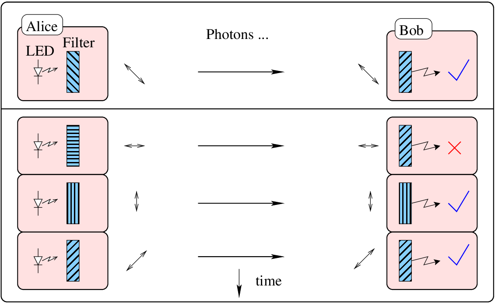
2. Quantum “cryptography” uses laws of quantum mechanics - Heisenberg Uncertainty applies to some pairs (of properties) of (atomic) particles. Measuring one property affects another.
A snooper is easily detected, and there are various protocols for using quantum effects to share keys.
Alice randomly chooses one of four polarizations: rectlinear: (0,90), or diagonal (45,135) (degrees).
Alice and Bob’s protocol
- Alice records what she has sent. Bob randomly chooses polarizations, and for each one reads the resultant value. (If he chooses correctly, gets a valid 1 or 0, if not randomly gets 1 or 0).
- Bob tells Alice the polarizations he has used: diag, diag, rectilinear, diag
- Alice replies by telling Bob which ones were correct. (1,3,4, 8,9,10 12,17)
- They now have 5000 (approximately) bits in common.
- If Harry the hacker senses some of the photons, he will affect the photon.
- Bob and Alice compare a subset of the bits that they think they know to detect snooping.
- If no snooping, then rest of bits are likely to be OK.
Quantum “BB84” systems are now available, operating over reasonably long (40km) fibre.
Wrapping up
Formal (mathematical) crypto has found its way into a range of application areas: public-key encryption, signatures, IBE, MPC, MPKE, non-interactive zero knowledge (NIZK) and non-interactive witness-indistinguishable (NIWI) proof systems, time-locked encryption, witness encryptions, 2-round MPC, attribute-based encryption, deniable encryption, functional encryption, quantum money...
In a sense, the core of modern crypto centres on complexity ideas - hard vs easy, \mathrm{P}\neq\mathrm{NP}, and though the notions of the (hopefully hard) factorization and Dlog based constructions have worked so far, we already know of polynomial-time (quantum) solutions for most of the systems based on these. This drives the interest in other bases, perhaps ones with relevance in the post-quantum world.
A not-complete list of core hardness ideas that have been used, or could be applied: factorization, Dlog, bilinear maps, learning with errors (LWE), learning parity with noise (LPN), multilinear maps, iO ideas, latticed-based crypto...
The end...
Outline
- Side Channels
- Timing: Exponentiation attack
- Cache timing: attack on Montgomery ladder!
- Fault injections
- Side channel attacks on smartcards
- Non-obvious applications and
attacks
- Secret Sharing (SS)[Administrative controls: SOD]
- Secure multi-party computation (MPC)[Data privacy issues]
- Oblivious transfer (OT) [Non-repudiation]
- Quantum communication and computation[Post...]
- The
end...
- Where did we go?
Where did we go?
In this course, each session looked at a particular attack surface, with some exploration of the attacks, and then advice on remediation.
In May I characterized the current IT security situation as warfare. Since then, we explored:
- Social Engineering (in May):
-
Fighting human weaknesses with awareness.
- System Complexity:
-
Issues with our complex systems.
- Crypto:
-
Pre/post 1976. Encryption and hashes and computational complexity.
- IP Networks:
-
For resilience, not security. Hardening is a bit ad-hoc.
- OtherNets:
-
Other networks that rely on security-by-obscurity.
- Web Applications:
-
XSS, injections. Fight back with awareness/tools.
- Machines:
-
Memory/cache issues. Fight back with DEP, ASLR etc.
- Side Channels:
-
Timing, faults. Fight back with constant time functions and...
Finally we looked at some of the future directions for secure systems based on distributed (non-heirarchical) systems.
End statement...
It has been a privilege to have presented to you, and I hope I have shown you a few things that are interesting to you, and help you in the future...
“In the beginning the Internet was created. This has made a lot of people very angry and been widely regarded as a bad move”. (\approx Douglas Adams)↩︎